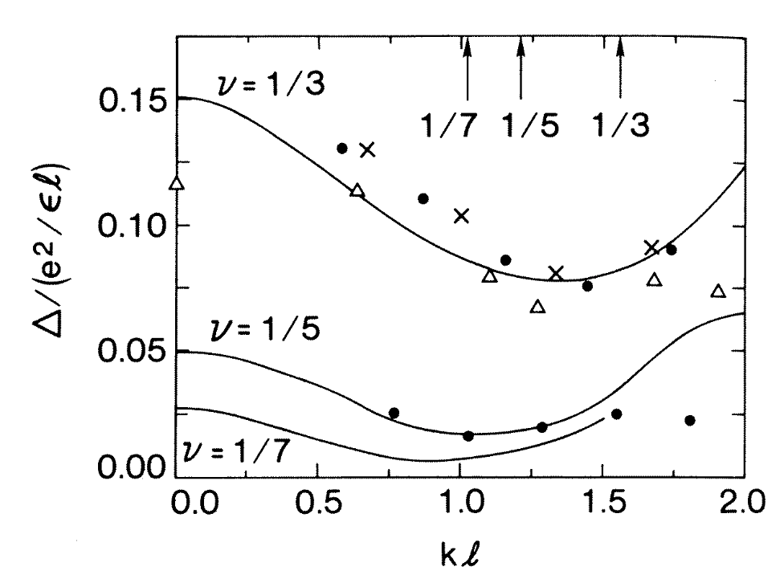

Calculating eigenstates and eigenenergies is one thing, but what do experimentalists actually measure?
Want to understand how many body systems respond dynamically to an external probe
Time evolution of spontaneous fluctuations (thermal or quantum) obeys similar dynamics \longrightarrow fluctuation–dissipation relation
At finite temperature \langle\langle y^2\rangle\rangle=\tr\left[\rho\\, y^2\right] = \frac{\coth(\beta\omega_0/2)}{2m\omega_0} \rho = e^{-\beta H}/Z is equilibrium density matrix, and Z=\tr[e^{-\beta H}] is partition function
The double angular brackets \langle\langle (\cdots)\rangle\rangle denote that we are taking quantum and thermal expectations.
What about time dependent fluctuations? A natural candidate: \langle\langle y(t)y(0)\rangle\rangle, y(t) = e^{iHt} y e^{-iHt} (Heisenberg picture)
This gives the quantum noise spectrum
S(\omega) = \int_{-\infty}^\infty \langle\langle y(t)y(0)\rangle\rangle e^{i\omega t}\,dt.
S(\omega)\neq S(-\omega)
Many of the properties of S(\omega) are most easily understood from spectral representation
Insert complete set of energy eigenstates between y(0) and y(t)
S(\omega) = 2\pi\sum_{m,n} \frac{e^{-\beta E_n}}{Z} |\langle{n}\rvert y\lvert{m}\rangle|^2 \delta(\omega-E_m+E_n)
S(\omega) = S(-\omega) e^{\beta\omega}.
At zero temperature \beta\to\infty and we can see that S(\omega<0)=0.
Let’s evaluate S(\omega) for oscillator. The matrix elements are \langle{n}\rvert y\lvert{m}\rangle = \frac{1}{\sqrt{2m\omega_0}}\begin{cases} \sqrt{m+1} & \text{if } n=m+1 \\ \sqrt{m} & \text{if } n=m-1. \end{cases} \begin{align*} S(\omega)&=\frac{\pi}{m\omega_0} \sum_n \frac{e^{-\beta E_n}}{Z} \left[n\delta(\omega+\omega_0)+(n+1)\delta(\omega-\omega_0)\right]\nonumber\\ & = \frac{\pi}{m\omega_0}\left[n_\text{B}(\omega_0)\delta(\omega+\omega_0)+(n_\text{B}(\omega_0)+1)\delta(\omega-\omega_0)\right] \end{align*} n_\text{B}(\omega)\equiv \frac{1}{\exp\left(\beta\omega\right)-1} is Bose distribution function
\begin{align*} S(\omega)&=\frac{\pi}{m\omega_0} \sum_n \frac{e^{-\beta E_n}}{Z} \left[n\delta(\omega+\omega_0)+(n+1)\delta(\omega-\omega_0)\right]\nonumber\\ & = \frac{\pi}{m\omega_0}\left[n_\text{B}(\omega_0)\delta(\omega+\omega_0)+(n_\text{B}(\omega_0)+1)\delta(\omega-\omega_0)\right] \end{align*}
\begin{align*} S(\omega)&= \frac{\pi}{m\omega_0}\left[n_\text{B}(\omega_0)\delta(\omega+\omega_0)+(n_\text{B}(\omega_0)+1)\delta(\omega-\omega_0)\right]\\\\ &\to \frac{k_\text{B}T}{2m\omega_0^2} \times 2\pi\left[\delta(\omega+\omega_0)+\delta(\omega-\omega_0)\right] \end{align*}
a^\dagger_k(t) = e^{i\omega_k t}a^\dagger_k,\quad a^{\vphantom{\dagger}}_k(t) = e^{-i\omega_k t}a^{\vphantom{\dagger}}_k
\begin{align*} S(\omega)= 2\pi\sum_k |c_k|^2\left[n_\text{B}(\omega_k)\delta(\omega+\omega_k)+(n_\text{B}(\omega_k)+1)\delta(\omega-\omega_k)\right] \end{align*}
Solve Heisenberg equations of motion H = \sum_k \omega_k a^\dagger_ka^{\vphantom{\dagger}}_k - f(t)y, where y is written in terms of normal modes \frac{da^{\vphantom{\dagger}}_k}{dt} = -i\omega_k a^{\vphantom{\dagger}}_k +i c_k f(t),
Solution is a^{\vphantom{\dagger}}_k(t) = e^{-i\omega_k t}a^{\vphantom{\dagger}}_k(0)+a_{k,f}(t) with a^{\vphantom{\dagger}}_{k,f}(\omega) \equiv \frac{c_k}{\omega_k-\omega-i0} f(\omega). (-i0 introduced for response analytic in UHP i.e. causal)
y(\omega) = \sum_k |c_k|^2\left[\frac{1}{\omega_k-\omega-i0}+\frac{1}{\omega_k+\omega+i0}\right]f(\omega).
This defines the response function \chi(\omega) \chi(\omega)\equiv \frac{y(\omega)}{f(\omega)} = \sum_k |c_k|^2\left[\frac{1}{\omega_k-\omega-i0}+\frac{1}{\omega_k+\omega+i0}\right]
Then use…
\text{Im} \frac{1}{x\mp i0} = \pm\pi\delta(x),
\operatorname{Im}\chi(\omega) =\mathrm{sgn}(\omega)\pi\sum_k |c_k|^2\delta(\omega_k-\omega)
S(\omega) = 2\operatorname{Im}\chi(\omega)\left[n_\text{B}(\omega)+1\right]
Check
Check that in the classical limit (k_\text{B}T\gg \hbar \omega) S(\omega) = 2\operatorname{Im}\chi(\omega)\left[n_\text{B}(\omega)+1\right] reduces to S(\omega)=\frac{2k_\text{B}T}{\omega} \operatorname{Im}\chi(\omega) Consistent with classical equipartition
We saw that classically \text{Im}\,\chi(\omega) related to dissipation
FDT relates \operatorname{Im}\chi(\omega) and S(\omega). How is S(\omega) related to dissipation?
Regard driving force as perturbation that causes transitions between energy eigenstates H_\text{pert} = - f(t)y with f(t)=f_0\cos\omega t
In lowest order perturbation theory, system makes transitions \pm\omega in energy
Rates found from Fermi’s golden rule
\Gamma_{n\to m} = 2\pi \left(\frac{f_0}{2}\right)^2|\langle{n}\rvert y\lvert{m}\rangle|^2 \delta(\pm\omega+E_m-E_n).
Total rate is sum over all initial (\lvert{n}\rangle) and final states (\lvert{m}\rangle), including probability e^{-\beta E_n}/Z of finding the system initially in \lvert{n}\rangle
c.f. spectral representation of S(\omega)
S(\omega) = 2\pi\sum_{m,n} \frac{e^{-\beta E_n}}{Z} |\langle{n}\rvert y\lvert{m}\rangle|^2 \delta(\omega-E_m+E_n)
\Gamma(\omega) = S(\omega)\left(\frac{f_0}{2}\right)^2
S(\omega) measures rate of transitions absorbing energy \omega; S(-\omega) the rate for emitting energy \omega.
Asymmetry of S(\omega) is asymmetry between emission and absorption of radiation
The rate of energy absorption is
\omega\Gamma(\omega) = \omega S(\omega)\left(\frac{f_0}{2}\right)^2 = \frac{1}{2}\omega\operatorname{Im}\chi(\omega)\left[n_\text{B}(\omega)+1\right]f_0^2
\omega\Gamma(\omega) = \omega S(\omega)\left(\frac{f_0}{2}\right)^2 = \frac{1}{2}\omega\operatorname{Im}\chi(\omega)\left[n_\text{B}(\omega)+1\right]f_0^2
Check
Compare with \begin{align*} W_\text{diss} = \langle f(t) \dot y(t)\rangle = \frac{1}{2}\omega\operatorname{Im}\chi(\omega)f_0^2 \end{align*} They agree when n_\text{B}(\omega)\to 0: energy of transition being much larger than thermal energy \hbar\omega\gg k_B T.
So far, considered only response of linear systems!
How do we talk about linear response in general?
H_t = H_0 - \lambda_t B?
In the interaction picture \lvert{\Psi_I(t)}\rangle \equiv e^{iH_0 t}\lvert{\Psi(t)}\rangle i\frac{\partial \lvert{\Psi_I(t)}\rangle}{\partial t} = -\lambda_t B_I(t) \lvert{\Psi_I(t)}\rangle, where B_I(t) = e^{iH_0 t}B e^{-iH_0 t}
Result of first order time dependent perturbation theory is \lvert{\Psi_I(t)}\rangle=\lvert{\Psi(0)}\rangle+\lvert{\Psi^{(1)}_I(t)}\rangle+\cdots, with
\lvert{\Psi^{(1)}_I(t)}\rangle = i\int_0^t dt' \lambda_{t'} B_I(t') \lvert{\Psi(0)}\rangle
\begin{align*} &\Braket{\Psi(t)|A|\Psi(t)} = \Braket{\Psi_I(t)|A_I(t) |\Psi_I(t)} \nonumber\\ &=\Braket{\Psi(0)|A_I(t)|\Psi(0)} +i \int_0^t dt' \lambda_{t'}\Braket{\Psi(0)| \left[A_I(t),B_I(t')\right] |\Psi(0)} \end{align*}
Mixed states can be treated by averaging over a distribution of quantum states \langle\cdots \rangle \longrightarrow \langle\langle\cdots\rangle\rangle
\chi_{AB}(t) of A due to perturbation that couples to B
\chi_{AB}(t) = i\langle\langle\left[A_I(t),B_I(0)\right]\rangle\rangle,\quad t>0. (Normally write A(t) rather than A_I(t): Heisenberg picture for the unperturbed problem)
S_{AB}(t) \equiv \langle\langle A_I(t)B_I(0)\rangle\rangle
S_{AB}(t) = S_{BA}(-t-i\beta)
Check
Hint: use the cyclic property of the trace.
S_{AB}(t) = S_{BA}(-t-i\beta).
S_{AB}(\omega) = e^{\beta\omega} S_{BA}(-\omega) (we’ve seen this before!)
\begin{align*} \chi_{AB}(t) &= \begin{cases} i\left[S_{AB}(t)-S_{BA}(-t)\right] & t>0\\ 0 & t<0 \end{cases}\\ &= i\theta(t)\left[S_{AB}(t)-S_{BA}(-t)\right] \end{align*}
\chi_{AB}(t)=i\theta(t)\left[S_{AB}(t)-S_{BA}(-t)\right]
\tilde\theta(\omega) = \frac{i}{\omega+i0} \begin{align*} \chi_{AB}(\omega)&= -\int \frac{d\omega'}{2\pi}\frac{S_{AB}(\omega')-S_{BA}(-\omega')}{\omega-\omega'+i0}\\ &=-\int \frac{d\omega'}{2\pi}\frac{S_{AB}(\omega')\left[1-e^{-\beta\omega'}\right]}{\omega-\omega'+i0} \end{align*}
The quantites \chi_{AB}(\omega) and S_{AB}(\omega) have spectral representations in terms of energy eigenstates and eigenvalues
S_{AB}(\omega) = 2\pi\sum_{m,n} \frac{e^{-\beta E_m}}{Z} \Braket{m|A|n}\Braket{n|B|m} \delta(\omega-E_n+E_m)
Check
Use the spectral representation to prove the fluctuation dissipation relation
H_\text{pert} = \sum_{j=1}^N V(\mathbf{r}_i,t) = \int V(\mathbf{r},t)\rho(\mathbf{r})\, d\mathbf{r}= \frac{1}{L^3}\sum_\mathbf{q}V_\mathbf{q}(t) \rho_{-\mathbf{q}}
Perturbation couples to the density: how is density affected?
In a translationally invariant system
\langle\langle \rho_\mathbf{q}(t)\rangle\rangle = -\frac{1}{L^3} \int_{-\infty}^t \chi^{\rho}_\mathbf{q}(t-t') V_\mathbf{q}(t)\,dt',
where the density response function \chi^\rho_\mathbf{q}(t) is
\chi_\rho(\mathbf{q},t) = i\langle\langle\left[\rho_\mathbf{q}(t),\rho_{-\mathbf{q}}(0)\right]\rangle\rangle
General theory applies with A=\rho_\mathbf{q} and B=\rho_{-\mathbf{q}}. At T=0 S_\rho(\mathbf{q},\omega) = 2\pi\sum_{n} |\langle{0}\rvert\rho_\mathbf{q}\lvert{n}\rangle|^2 \delta(\omega-E_n+E_0)
This is the dynamical structure factor, on account of its importance in scattering experiments.
The static structure factor is S_\rho(\mathbf{q}) = \int S_\rho(\mathbf{q},\omega) \frac{d\omega}{2\pi} = \langle\langle\rho_\mathbf{q}\rho_{-\mathbf{q}}\rangle\rangle
S_\rho(\mathbf{q},\omega) obeys certain general relations irrespective of system
If interaction depends only on density \left[H_\text{int},\rho_\mathbf{q}\right]=0
\left[H,\rho_\mathbf{q}\right]=\left[T,\rho_\mathbf{q}\right]
T = -\frac{1}{2m}\sum_{j=1}^N \nabla_i^2
[[H,\rho_\mathbf{q}],\rho_{-\mathbf{q}}] = -\frac{N\mathbf{q}^2}{m}
\begin{align*} \braket{0|[[H,\rho_\mathbf{q}],\rho_{-\mathbf{q}}]|0}&=\braket{0|H\rho_\mathbf{q}\rho_{-\mathbf{q}}- \rho_\mathbf{q}H\rho_{-\mathbf{q}}-\rho_{-\mathbf{q}} H\rho_\mathbf{q}+\rho_{-\mathbf{q}}\rho_\mathbf{q}H|0}\\ &=2\sum_n|\langle{0}\rvert\rho_\mathbf{q}\lvert{n}\rangle|^2\left(E_0-E_n\right) \end{align*}
S_\rho(\mathbf{q},\omega) = 2\pi\sum_{n} |\langle{0}\rvert\rho_\mathbf{q}\lvert{n}\rangle|^2 \delta(\omega-E_n+E_0) to give the f-sum rule
\int_{-\infty}^\infty \omega S(\mathbf{q},\omega) \frac{d\omega}{2\pi}= \frac{N\mathbf{q}^2}{2m}
\beta=-\frac{1}{V}\frac{\partial V}{\partial p}. (inverse of Bulk modulus)
\beta^{-1} = \rho^2 \epsilon''(\rho).
\beta^{-1} = \rho^2 \epsilon''(\rho).
\epsilon(\rho_0+\delta\rho) = \frac{1}{2\beta\rho_0^2} \left[\delta\rho\right]^2 + V(\mathbf{r})\delta\rho
\epsilon(V(\mathbf{r})) = - \frac{\beta\rho_0^2}{2} \left[V(\mathbf{r})\right]^2
\sum_j V_0 \cos(\mathbf{q}\cdot \mathbf{r}_j) = \frac{V_0}{2}\left[\rho_\mathbf{q}+\rho_{-\mathbf{q}}\right]
\epsilon(V(\mathbf{r})) = - \frac{\beta\rho_0^2}{2} \left[V(\mathbf{r})\right]^2
\lim_{\mathbf{q}\to 0}\int_0^\infty \frac{S(\mathbf{q},\omega)}{\omega}\frac{d\omega}{2\pi} = \frac{N\rho\beta}{2}.
\lim_{\mathbf{q}\to 0}\int_0^\infty \frac{S(\mathbf{q},\omega)}{\omega}\frac{d\omega}{2\pi} = \frac{N}{2mc^2}.
Some systems (e.g Bose gases), are well described by S_\rho(\mathbf{q},\omega) \sim 2\pi S_\rho(\mathbf{q}) \delta(\omega - \omega(\mathbf{q})), for low \mathbf{q}, where \omega(\mathbf{q}) is dispersion relation of collective excitations (e.g. Bogoliubov modes)
In this approximation, f-sum rule tells us that
S_\rho(\mathbf{q}) = \frac{N\mathbf{q}^2}{2m\omega(\mathbf{q})}.
Excitations out of the condensate are free particles \omega(\mathbf{q}) = \frac{\mathbf{q}^2}{2m} S_\rho(\mathbf{q}) = N.
Completely uncorrelated particle positions (Poisson statistics).
S_\rho(\mathbf{q}) = \frac{N|\mathbf{q}|}{2mc}.
Check
Check compressibility sum rule
S_\rho(\mathbf{q},\omega) \sim 2\pi S_\rho(\mathbf{q}) \delta(\omega - \omega(\mathbf{q}))
\omega(\mathbf{q}) = \frac{N\mathbf{q}^2}{2m S_\rho(\mathbf{q})}
